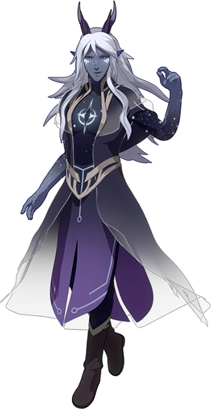
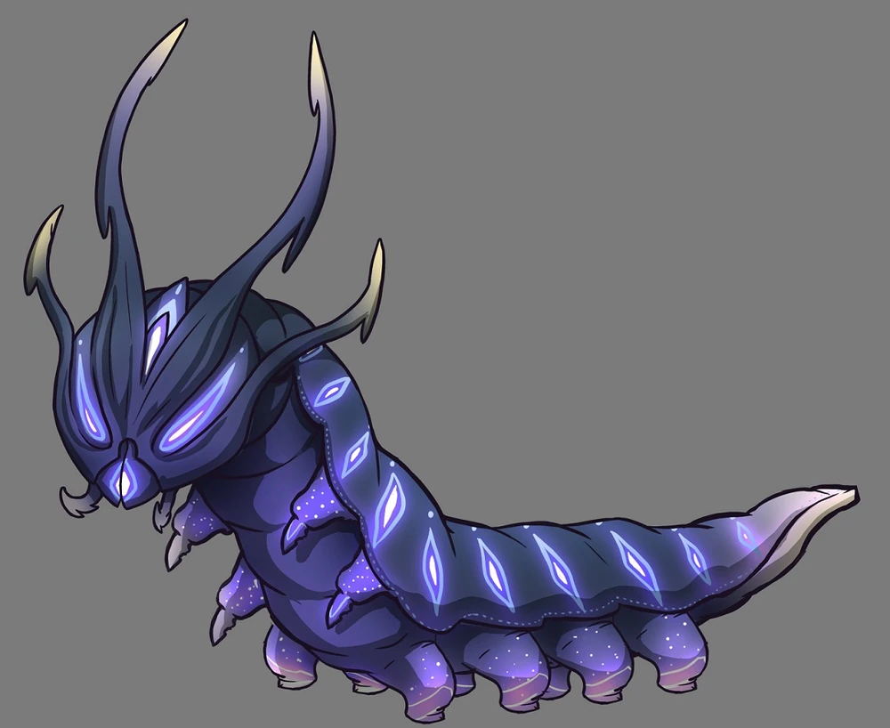
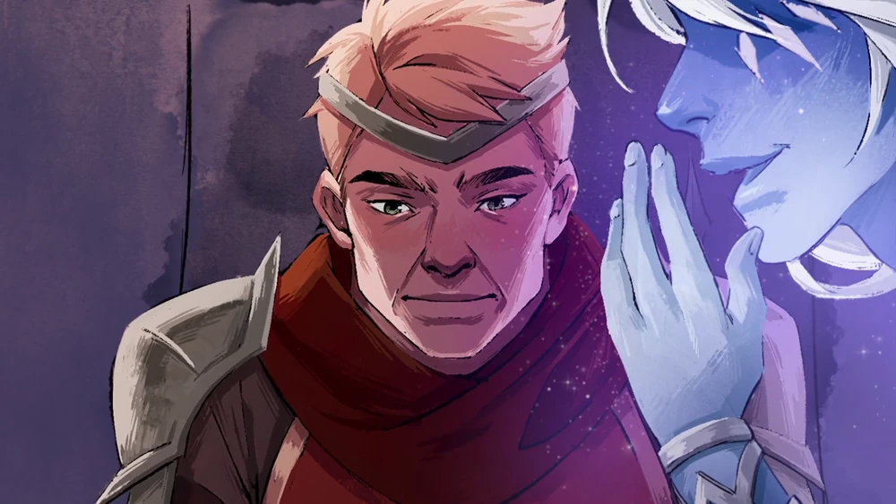

Appearance

Aaravos is a handsome Startouch Elf with midnight blue skin and long, layered white hair. He has narrow, upturned eyes with black sclera, and his yellow[10] irises can sometimes appear as lilac or pink depending on the lighting. He sometimes wears a dark cloak with a star symbol on its hood. His skin gets darker in color across his torso and down his arms before lightening once more. He has a black star marking on his chest which is surrounded by a white hued marking, as well as star markings of the same hue across his face and hands. These star markings are broken up into two layers of design: diamond patterns just below his eyes and a splash of smaller markings that give him the appearance of being freckled, making him look very young despite being approximately 5000 years old. His eyes sometimes glow white when performing magic.
Originally, parts of his body, his hair, his eyes, his horns, and the star on his chest were illuminated like stars. After becoming a "fallen" Startouch Elf, the lights on his body have faded. His eyes appeared in a bright, pink glow during that time.[14] These markings, however, still illuminate when he is using magic.
Personality
Aaravos is an exceptionally intelligent, cunning, and manipulative individual. He is both mysterious and secretive, but also charming and charismatic. Even Viren finds himself compelled by Aaravos's cryptic words and gifts and is willing to trust him as an advisor, despite being an extremely sharp-minded individual himself.[15] Aaravos knows when to back down from a fight that cannot be won and is very adept at staying several steps ahead of both his allies and enemies. Unlike Viren, Aaravos sees the bigger picture of things and does not fool anyone about his intentions, including himself. In addition to this, he claims to never tell any lies.
Aaravos also has shown a hint of arrogance when he reveals his belief on individuals who cannot be reasoned with, claiming them to be simple animals who deserve to be motivated by fear. Despite this, he has shown a dislike of those he considers arrogant, such as Avizandum, who took part in imprisoning him,[16] and the Sunfire Elves who took Viren - an extremely dangerous individual - and brought him right to the Sunforge, their nexus and source of their power. He is also shown to be at least somewhat sadistic, as he revealed the circumstances of Aditi's death to her descendant Khessa before killing her as well.[17]
Aaravos's arrogance is elaborated when he is faced with adversaries whom he views as inferior and chooses to attack them psychologically. During his first encounter with Team Zym, he merely saw and mocked them as pathetic children before he reminded them of their deepest insecurities to prove that they would stand no chance against him.[11]
Aaravos can be playful and enjoys teasing, but is also able to respectfully maintain an interesting discussion involving both thoughts and emotion. Despite generally withholding information, Aaravos has no issues expressing his distaste for his enemies in Xadia, such as Avizandum, whom he holds a grudge against.[16] Given the centuries-long span of his imprisonment, this malice is made all the more impressive due to how long he has maintained his vendetta.
Aaravos is often highly informal in his body language and mannerisms. From resting on the back of his spectral horse in his projection to communicate with Viren to his often circular and airy hand gestures, it appears that Aaravos is a very casual individual when attempting to gain the favor and loyalty of potential allies. Even when committing the act of murder, his body language remains fluid, relaxed, and radiates confidence. So far, it is not yet made clear what his personal goals are or why he chooses to aid Viren.
Due to his extensive lifespan, Aaravos is very knowledgeable, possessing a thorough understanding of the cultures, customs, and geography of Xadia and its people. This became evident in his strategy to infiltrate Lux Aurea, as he would require a firm understanding of Sunfire Elf customs to entrust Viren's safety into the hands of his sworn enemies, understanding that he would likely be taken before the Sunforge as part of his purification trial before the Sunfire Queen.[16] This shows Aaravos's understanding of the peoples of Xadia has not atrophied during his centuries-long imprisonment.
Skills and Abilities
Star Primal Connection
As a Startouch Elf, Aaravos draws power from the Stars. However, due to being a "fallen" Startouch Elf, he can only access a fraction of his former power.[3]
Magic Mastery
Aaravos is a phenomenally powerful Archmage who can perform magic of all six Primal Sources, as well as dark magic. It is currently unclear how he acquired these powers. The level of his mastery of magic is proven by the fact that he can perform spells without speaking the required incantations.[18] Even after all of the Archdragons, incredibly powerful beings who are each capable of wiping out entire armies, were united against him, they did not dare risk a direct confrontation with him, as he is a greater being of the heavens themselves.[
Aaravos was able to kill Khessa by flicking a single finger under her chin. Through the use of a Sun staff that he corrupted, he was later able to assist Viren in transforming a human army into powerful sun monsters immune even to dragon fire by copying and applying the heat-being mode of the Sunfire Elves onto the soldiers.[17] He can also possess and control other beings as puppets and mouthpieces to interact with the environment and the individuals on the other side of the mirror.[11]
Familiar
Aaravos has a familiar that is affiliated with him, a caterpillar-like creature that is not native to the world of Xadia.[19] He cannot directly speak to anyone beyond the mirror, but his magic allows him to control this companion, allowing him to use it to facilitate communication across the mirror. He can perform a magical ritual in concert with a person on the opposite side of the mirror to teleport the caterpillar across its surface, and he can then channel his voice through it so that those on the other side can hear him speak, while he can hear what the caterpillar hears. If Aaravos connects in this way to a person on the other side of the mirror who wields a magic staff, he can cast spells and channel them through it. The caterpillar is capable of increasing in size over time, and Aaravos can perform spells through the form. The caterpillar is able to hide inside the body of its host, either by crawling inside their ear or down their throat.[17]
The caterpillar is also able to secrete silk. When the caterpillar puts its silk across one's eye, they see an apparition of Aaravos to communicate with. This apparition is only visible to that person, and can conjure whatever they desire for themselves (for example, a steed).[16] The silk can also be used to wrap a dead body in a cocoon that prevents it from decaying.[6] When the caterpillar bites another, they are transformed into a spectral form of Aaravos for a short time and have all of his powers.[17] Aaravos's familiar can also use dark magic to steal magic from another being and sometimes can control others like how he controlled Viren to drain Azymondias's essence.[20] The caterpillar's body was eventually used to be transformed into a winged, Startouch Elf-like being after undergoing metamorphosis.[11]
Manipulation and Persuasion
Aaravos is a master manipulator who has been orchestrating massive conflicts and discords for a thousand years. Every major period of conflict that the world faced prior to his imprisonment seemed to be the work of a great cunning leader, but in every instance, it was actually Aaravos whispering in their ear. The people he chose as his instruments were those who had great strength of mind and strength of character, but who also had an insatiable fascination with magic. Aaravos was able to manipulate these great-minded people because he could give them the knowledge that they wanted so badly.[11] He is able to earn the trust of the cunning yet skeptical Viren after he reveals what the latter desires. He then proceeds to help Viren by instructing him on what to do so that he can achieve his goals of persuading the other monarchs of the Human Kingdoms to wage war on Xadia. Aaravos's persuasive and manipulative nature is further shown when he can trick people in power to further Viren's goals. Additionally, he intentionally calls Claudia an "asset" to which Viren refuses the claim and calls her his daughter and not merely a useful object. Aaravos smiles, as unknowingly Viren has shown him an exploitable weakness.
Trivia
- Aaravos's name shares a similarity with "aravah", which is a leafy branch of the willow tree. It is one of the four species used in a special waving ceremony during the Jewish holiday of Sukkot. As it lacks both smell and taste, it symbolizes those who lack both the Torah and good deeds (which in the world of Xadia may be a reference to dark mages, lacking both an arcanum and purity of soul). Because of its shape, the aravah is also the symbol of the mouth
- Aaravos's name is also similar to Erebos, one of the Greek primordial deities and the personification of darkness, which parallels his role of gifting dark magic to humanity. In the Greek dub, he was redubbed to Erebos.
- Aaravos shares his voice actor, Erik Dellums, with Koh the Face Stealer from Avatar: The Last Airbender.
- Aaravos was the original owner of the Key of Aaravos,[22] before it eventually came into possession of an unnamed female ancestor of Harrow's, and was passed down in his family for generations
- Aaravos narrates the opening sequence in "Echoes of Thunder". He is not an omniscient narrator, however, as he incorrectly states that humans destroyed the egg of Azymondias. This was done on purpose to surprise fan with the revelation that the story's narrator would turn out to be an existing character.[24] He also briefly narrates the opening of the episode "Sol Regem", and narrated the prologue of the first novel, which was signed by him.
- Aaravos is 6'6" tall without horns, which is based on his voice actor being 6'6" tall.
- A concept art of Aaravos before his fall includes five fingers, as it was created before elves were decided to only have four fingers on each hand.
- Aaravos's familiar, through which Aaravos talks to Viren, closely resembles the real-world dragonhead caterpillars, which are the larval form of the butterfly Polyura athamas. The caterpillar also evolves with the ongoing story.
- In the beginning stages of Aaravos's conduit, the writers described it as almost cute.
- Aaravos does not count the passage of time in minutes, nor hours, not even days. He counts candles, one after the other, burning themselves down to the wick and a puddle of hot wax. He would run out of candles if it weren't so easy to reform them with a wave of his hand, as though the burn had never happened.